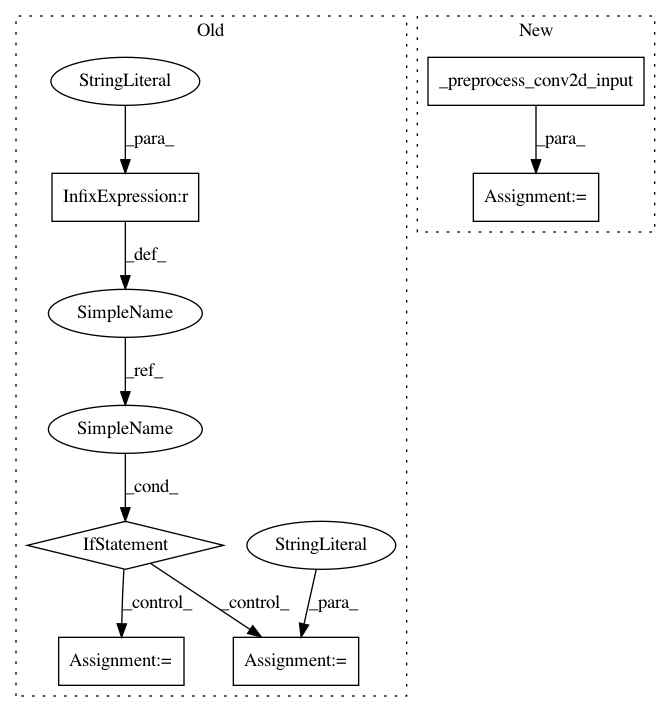

6b106ab4ec9a1c0eb3e24ae590ce63f84022ad40,keras/backend/tensorflow_backend.py,,conv2d,#Any#Any#Any#Any#Any#Any#,3232
Before Change
tf_data_format = _DATA_FORMAT_MAP[data_format]
nhwc_roundtrip = not _has_nchw_support() and tf_data_format == "NCHW"
if nhwc_roundtrip:
tf_data_format = "NHWC"
x = tf.transpose(x, (0, 2, 3, 1)) // NCHW -> NHWC
padding = _preprocess_padding(padding)
x = tf.nn.convolution(
input=x,
filter=kernel,
After Change
if data_format not in {"channels_first", "channels_last"}:
raise ValueError("Unknown data_format " + str(data_format))
x, tf_data_format = _preprocess_conv2d_input(x, data_format)
padding = _preprocess_padding(padding)
x = tf.nn.convolution(
input=x,
In pattern: SUPERPATTERN
Frequency: 3
Non-data size: 6
Instances
Project Name: keras-team/keras
Commit Name: 6b106ab4ec9a1c0eb3e24ae590ce63f84022ad40
Time: 2017-10-16
Author: francois.chollet@gmail.com
File Name: keras/backend/tensorflow_backend.py
Class Name:
Method Name: conv2d
Project Name: keras-team/keras
Commit Name: 3fe89b4f7b393696039dd61d4aea3f648e2c809e
Time: 2017-02-09
Author: francois.chollet@gmail.com
File Name: keras/backend/tensorflow_backend.py
Class Name:
Method Name: conv2d
Project Name: keras-team/keras
Commit Name: ee8ff00a2a8a307c952fb8e7bef241188c7fb12b
Time: 2016-07-03
Author: francois.chollet@gmail.com
File Name: keras/backend/tensorflow_backend.py
Class Name:
Method Name: pool2d